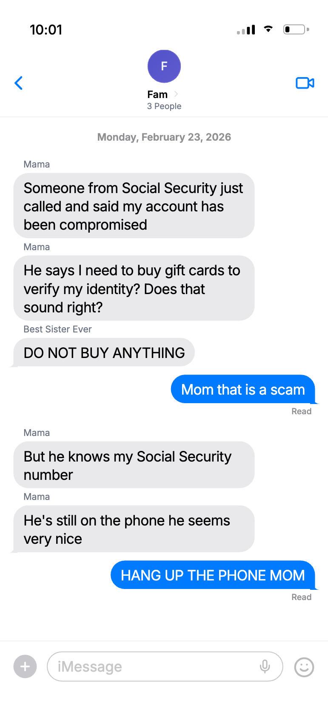
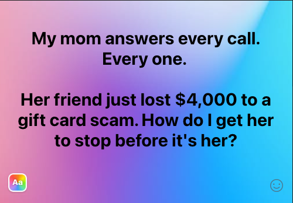

A channel strategy, testing framework, and creative sprint for acquiring caregiver buyers through Meta
This assignment covers why Meta is the right channel, who the buyer is, how I'd test it, and the actual creative I'd launch on day one. Every assumption is sourced, every test has kill criteria, and the calculator below lets you stress-test the unit economics yourself.
Explore the strategyNo other social platform comes close for daily engagement with women 50+. The audience lives on Facebook, they respond to ads, and comparable industries prove the channel-audience match works.
Community Phone has tested Meta before with CPAs of $600-900. Given the strength of the evidence above, $600-900 CPAs suggest an execution issue, not a channel-audience mismatch. Bringing CPAs into range requires rigorous creative testing, dialed-in targeting data, third-party intent data, and creative-to-landing-page continuity.
The woman managing care and living decisions for her aging parent.
The family member who handles technology, health, and day-to-day decisions for an older loved one
I have bought two services for my 90 year old parents
— Trustpilot ReviewMy mom loved her community phone. It was super easy to set up
— Trustpilot ReviewWe set a landline up for my 94 year old granny
— Trustpilot ReviewEvery test starts with a falsifiable hypothesis and clear kill criteria. Here's what we're testing and how we'll know if it works.
"If we launch Meta targeting women 50+ making phone decisions for aging parents, testing 3 caregiver pain points (usability, safety, scam protection) across funny and serious creative tones — each paired with a landing page that continues the specific emotional thread from the ad — we expect blended CAC at or below $300 and payback within 5-6 months, producing $5K+ incremental MRR within 90 days."
3 pain points × 2 creative tones = a matrix that isolates which combination creates a pattern interrupt for this buyer.
The buyer has already tried and failed with a smartphone
Safety and emergency access — the quiet fear caregivers carry
Robocalls targeting elderly parents — $2.7B lost last year
Recognition humor ("oh my god, that's MY mom"). Warm, relatable, shareable.
Emotional weight. The quiet fear caregivers carry but rarely see reflected in advertising.
Primary KPI: Blended CAC (total Meta spend / total new paying customers). Target: ≤$300.
| Metric | Benchmark | What It Diagnoses |
|---|---|---|
| CTR | 0.9-1.5% | Creative resonance. Below 0.9% = creative problem, not audience. |
| LP Conversion Rate | 5-12% | Offer/page quality. |
| Trial-to-Paid | 10-20% | Product-market fit for this audience. |
| Cost per Lead | $15-30 | Funnel efficiency. |
| Meta Churn vs. Google | Within 1.5x | Lead quality. |
| Incremental MRR | $5K+ in 90 days | Business impact. |
CAC above $600 after both creative sprints with lookalikes → kill.
CTR below 0.5% after $1K and 7 days → kill and replace.
Both interest and lookalike produce CAC above $600 for same creative → creative is the problem.
Trial-to-paid below 5% after 500+ trials → kill. Meta churn 2x+ Google after 60 days → kill or reposition.
What I need to see to double down:
How the budget flows, how the tests are structured, and how we make decisions.
Each variant runs against both lookalike and interest audiences to test creative and audience simultaneously.
| Ad Set | Audience | Creative | $/Day |
|---|---|---|---|
| 1 | Lookalike (1-3%) | Hero: Funny group chat | ~$125 |
| 2 | Lookalike (1-3%) | V1: Serious group chat | ~$125 |
| 3 | Lookalike (1-3%) | V2: Solo text post | ~$125 |
| 4 | Lookalike (1-3%) | V3: Direct offer | ~$125 |
| 5 | Interest (caregiving, AARP) | Hero: Funny group chat | ~$75 |
| 6 | Interest | V1: Serious group chat | ~$75 |
| 7 | Broad (50+, female) | Top 2 from days 1-5 | ~$75 |
| 8 | Retargeting | Winning variant | ~$75 |
| Total: ~$800/day = ~$5,600/week = ~$11,200 first two weeks | $800 | ||
Based on scam sprint learnings, build creative for the next pain point using winning variables. If funny won, test "Mom can't use a cell phone." If serious won, test "Alone without a way to call." Apply the same hero + 3 variant structure. This gives us reads across two pain points by end of Month 1.
| Signal | Diagnosis | Action |
|---|---|---|
| Low CTR (<0.5%) across all 4 variants | The scam hook isn't stopping thumbs | Move to weeks 3-4 pain point sprint early. Still failing → kill channel. |
| Good CTR (>1%) + low LP CVR (<2%) | Ads work, LP doesn't convert | Test LP variants: headline, offer, layout. Hold creative constant. |
| Good CTR + good CVR + low trial-to-paid (<5%) | Product/offer mismatch | Test offers: trial length, hardware discount, money-back guarantee. |
| Hero and V1 perform very differently | Tone matters | Apply winning tone to weeks 3-4 sprint. |
| V2 (solo text) outperforms Hero | Format matters more than expected | Use solo text format for second pain point sprint. |
| V3 outperforms Hero on CAC | Direct offer qualifies clicks | Put the offer in the ad for all future creative. |
| Lookalikes beat interest by >30% on CAC | Data infrastructure thesis confirmed | Scale lookalikes. Test 3-5% and 5-10% windows. |
| Strong shares/comments but low conversion | False positive (engagement ≠ intent) | Evaluate on CAC only. Funny creative is most at risk. |
| Best Case | Okay Case | Bad Case | |
|---|---|---|---|
| Month 1 $15-20K |
1-2 concepts ≤$400 CAC → scale to $25-35K | One below $600, trending down → continue at current budget | All above $600, no differentiation → pause, rethink creative |
| Month 2 $35-50K |
Winner ≤$300 → scale to $40-50K, begin offer testing | Winner $300-400 → maintain, focus on LP/offer optimization | Still above $400 → kill |
| Month 3 $75-100K |
Blended CAC ≤$300, $5K+ MRR, clear playbook. Meta is validated. |
Weekly creative cycles: ship Monday, review Friday
7-day minimum per test, $500-1K minimum spend before reading results
No test runs longer than 14 days without a go/no-go decision
All tests have a pre-registered hypothesis before launch
Stress-test the unit economics. Every slider is tunable. Defaults match the testing plan above (~$800/day across 8 ad sets). Adjust any input and watch projected outcomes update in real time.
| Channel | Total Spend | Impressions | Clicks | Leads | Customers |
|---|
The actual ads I'd launch on day one. A hero creative plus three variants, each isolating a single variable to generate clear learnings.
~125 chars visible before "See more" on mobile. Hook must land in the first line. First-person testimonial voice builds trust with women 50+.
25-40 characters ideal. Benefit-oriented or offer-driven. Headlines above 50 chars see 25-30% CTR drops. Not shown on all placements.
Grey text below headline, desktop only. ~5-15% of impressions show this. Best use: risk reversal, secondary social proof, urgency.
"Learn More" = 22.5% higher CTR (cold audiences). "Sign Up" = 14.5% higher CVR (retargeting/offer-driven variants).
A carousel ad showing a family group chat where Mom texts her kids about "the nicest call from Social Security," describing every scam red flag as a positive. The kids panic. Mom reveals she's kidding — but the call was real.
Scam calls are getting smarter. AI is making them harder to spot, even for people who know better. Community Phone blocks scam calls before they ever ring — and you can see who's calling from the app. Get the phone free with an annual plan.
Get the phone free. Block every scam call.
No contracts. Cancel anytime.
Learn More
Same format (group chat), same pain point (scam calls), different emotional register. Does this audience convert better through humor or fear?

Americans lost $2.7 billion to phone scams last year. Your parents are the #1 target. Community Phone blocks scam calls before they ever ring — and you can see who's calling from the app. Get the phone free with an annual plan.
It only takes one call.
No contracts. Cancel anytime.
Learn More
Same pain point, same tone, different visual format. Does a multi-character group chat outperform a solo first-person post?

Community Phone. It blocks scam calls before they ever ring — she doesn't have to stop answering because the scam calls just don't come through. You can see who's calling from the app. Get the phone free with an annual plan.
Get the phone free. Block every scam call.
No contracts. Cancel anytime.
Learn More
Same solo text post visual, same hook. Does a different offer structure change who clicks and whether they convert? Hero offers free hardware (higher commitment). This variant offers first month free (lower barrier).
Scam calls are getting smarter. AI is making them harder to spot, even for people who know better. Community Phone blocks scam calls before they ever ring — and you can see who's calling from the app. First month free. No contracts, cancel anytime.
First month free. Block every scam call.
No contracts. No internet needed.
Sign Up
Why this creative direction, what each variant tests, and what the outcomes mean.
Customer reviews revealed phone scams targeting elderly parents as a top purchase trigger. Caregivers describe universal frustration — their parent answers every call because of generational conditioning. The scam details come directly from FTC and AARP documentation.
The most valuable test — the answer sets the tone for all future creative.
Tests whether the format matters or the message is enough.
Free hardware with annual commitment vs. first month free with no contracts.
CAC is the only decision metric. CTR = did the hook work. LP CVR = did the LP continue the story. Trial-to-paid = did the product deliver.
High shares/comments but low conversion, especially on the funny hero. If any variant shows CTR above 2% but CAC above $600, it's a false positive.
All 4 above $600 CAC after $1K+ each → kill the concept, test a different pain point. 1-2 outperform → reallocate 60%+ budget, build new variants within the winning variable.
This assignment focuses on Meta because I believe it's the channel that can be tested, optimized, and scaled the quickest for Community Phone's caregiver buyer. But it's far from the only opportunity.
In addition to exploring Meta and potentially other performance channels, I think there's real potential in partner marketing. A company like Atria Senior Living is a natural fit. The brands serve the same audience from different angles, and a partnership could start with co-marketed content or bundled offers. Down the line, there's an even bigger play: a co-sell motion where Community Phone becomes the default landline in senior living communities. That turns a marketing partnership into a distribution channel.
There are a ton of channels worth exploring. This is just the one I'd start with because it gives us the fastest feedback loop and the clearest path to proving unit economics.